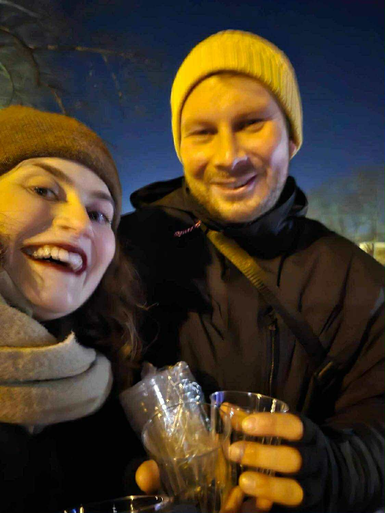

Välkommen!
Vigseln börjar klockan 14:00 lördag 11 april 2026 i Danmarks kyrka utanför centrala Uppsala.
Efter vigseln går vi tvärs över gatan till Danmarks bygdegård för mingel, middag och fest.

Plats
Kyrkans adress: Danmarksby 156, 755 98 Uppsala.
Bygdegårdens adress (precis över gatan från kyrkan): Danmarksby 87, 755 98 Uppsala.
Hitta hit
Buss 102 stannar precis utanför kyrkan. Den avgår från Uppsala centralstation en gång i timmen. Titta gärna på UL.se närmare bröllopsdatumet för mer information och exakta tider. Sista bussen från Danmarks kyrka till Uppsala C avgår 01:27.
För dig som åker bil finns parkeringsplatser utanför kyrkan. Danmark ligger bara åtta kilometer från centrala Uppsala, så för dig som hellre åker taxi går det förstås också bra.
Toastmasters
Vi är så glada över att få presentera kvällens toastmastrar: Angelica och Ivar! Vi lärde känna dessa stjärnor genom studierna på pol. kand.
Angelica är Nordingrådottern som efter en karriär på Finansdepartementet och i Bryssel nyligen flyttat norrut igen. Ivar är den trogna Stockholmsbon som har stenkoll på pensioner, bloggare och hur det är att dela lägenhet med Ditte.
Vill du hålla tal eller hitta på något annat kul under middagen? Skriv till vine.jnuyfgrva@tznvy.pbz eller natryvpntenqva@tznvy.pbz så löser de det!
Barn
Vi älskar att hänga med era barn, men vill inte göra det just den här dagen.
Ammande barn är förstås välkomna.
Presenter
Vi önskar oss ingenting, utan ser det som gåva nog att du kommer och firar med oss! Vill du ändå gärna ge något uppskattar vi ett litet bidrag till vår bröllopsresa (destination New York!).
För att ge ett bidrag till resan kan du swisha Dittes pappa,
OSA
Vi behöver veta om du kan komma senast den 11 december 2025. Anmäl dig genom att fylla i formuläret här: